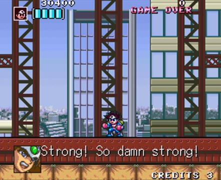
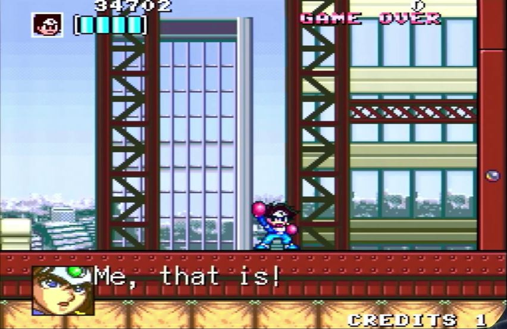
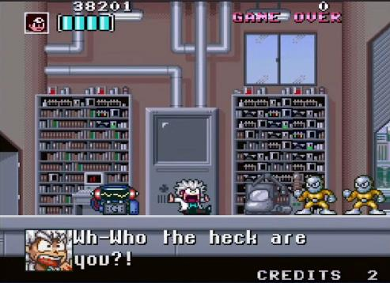
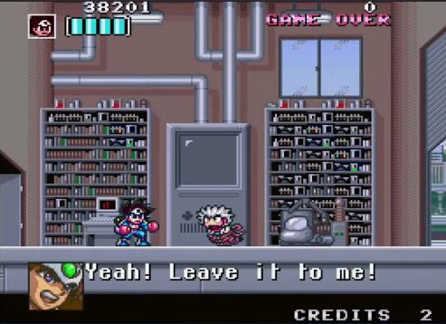
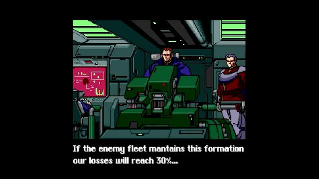

What is retro-bit?
Among other things, retro-bit publishes licensed Japanese games in physical cartridges for 16-bit consoles with an English translation.
Link to their mission statement: https://retro-bit.com/retro-bit-publishing/
What is this about?
I suspect that several of retro-bit’s releases presented as new and original translations of old SNES and Genesis games are plagiarism of existing fan translations or, in at least one instance, other official translations.
Here’s the evidence I’ve gathered. I know that some of it is tenuous and some of it is egregious, but it all adds up. You can be the judge of that.
The incriminating games are:
retro-bit’s Shubibinman Zero FAQ states:

retro-bit’s Assault Suits Valken FAQ states:
retro-bit’s Majyūō: King of Demons FAQ states:

Quick navigation:
Shockman Zero
Shockman Zero: Font
Shockman Zero: Script
Shockman Zero: BB Gang
Shockman Zero: Credits
Shockman Zero: Sources
Assault Suits Valken
Assault Suits Valken: Name
Assault Suits Valken: Font engine
Assault Suits Valken: Script
Assault Suits Valken: Sources
Gley Lancer
Gley Lancer: Sources
Majyūō: King of Demons
My thoughts
Game 1: Shockman Zero

Kaizou Choujin Shubibinman Zero (改造町人シュビビンマン零) is a 1997 for the Satellaview (the addon of the Super Famicom only released in Japan). It was originally intended for a 1994 cartridge release, hence the “1994” on the title screen.
Over the last few years, the game had a regain of popularity and multiple versions have been released:
2017 release

In 2017, Extreme and Columbus Circle released a cartridge version in Japanese.
2023 fan translation

On January 29 2023, an unofficial English translation of the Super Nintendo game Shockman Zero was released on romhacking.net by Svambo, Anonymousse and Nokia3310.
It is based on the 2017 release.
2024 digital release

In 2024, Extreme, Ratalaika Games and Shinyuden released a digital version of the game, in English, on all modern consoles.
2024 retro-bit cartridge release
Between June 24, 2024 and July 29, 2024, retro-bit.com opened pre-orders for the cartridge release of the same game, in English as well. (MSRP: $54.99 USD / €64.99 EUR)
The FAQ that you can find at there states:


Evidence A: the font
The original Japanese game has an 8x8 latin font for the menus/ui. There’s also a partial font for the words “START”, “STAGE CLEAR” and “GAME OVER”.

But all the dialogs are using a 16x16 font in kanas and kanjis with a few exceptions like the “B” in BB団.

Which is why Svambo had to create a custom 8x16 latin font for the dialogs. I looked at both roms and this font is not in the original Japanese rom.

When looking at the retro-bit Press Kit release, you can see that the font they used is identical to svambo’s.
It’s more obvious when looking at their preview video of the game: https://youtu.be/YhrawWNKsM4The (The Press Kit screenshots shown below, do not respect the SNES aspect ratio and introduce artefact scan lines).
| retro-bit Press kit |
Svambo patch |
|---|---|
 |
|
 |
For example, the lowercase b and o have a discrepancy in Svambo’s font:
The shadow of the b loop does not match the shadow of the o loop (the b shadow has a weird right angle). Here’s how the shadow should look like if they were consistent:
Somehow, that exact same discrepancy appears in the retro-bit font:
This is only one letter, you could analyze every letters side by side and find that the fonts are identical.
Surely this is just a coincidence.
Evidence B: the script
Here are some of the texts, side by side.
For good measure, I included screenshots from the PS5 digital release. (Notice how they created a new font)
It helps to highlight the similarities between the retro-bit translation and the Svambo’s patch.
| retro-bit release |
svambo-jpg patch |
PS5 digital release |
|---|---|---|
 |
 |
|
 |
||
 |
 |
|
 |
 |
|
 |
||
 |
 |
|
 |
||
 |
 |
|
 |
||
 |
 |
|
 |
 |
|
 |
 |
|
|  |  |
|
|  |  |
 |
 |
||
 |
||
 |
 |
|
 |
 |
|
 |
 |
|
 |
 | |
 |
||
 |
||
 |
 |
|
 |
||
 |
 |
|
|  | ||
 |
||
That’s a lot of similarities. It looks like someone ran through the script with a thesaurus to replace a few words here and there:
wicked became impish
Who are you?! became Who are you! (why would they remove the question mark?)
resident cyborg became cyborg townsman
etc.
Some people would say it’s a coincidence.
As one could argue that a simple sentence can only be translated in so many ways, I took a look at one line in the Japanese version:
| Japanese | PS5 digital release |
|---|---|
 |
The line よくおぼえておくわ means “I’ll remember this well”. In the Svambo translation, the translator took the creative liberty to translate it as “I’ll put you on my list!”.
Now look at the retro-bit release line…
| retro-bit release | Svambo patch |
|---|---|
|
I find this very odd. But it’s true that coincidences happen.
Another example:

The Japanese き〜！(ki~) is an onomatopea for a long hysterical scream. In manga, that would translated by “screech”.
| retro-bit release | Svambo patch |
|---|---|
|
Not only do both translations keep that “ki” as if it were Japanese but they share the same odd formatting “…kee…!”
Evidence C: Who the hell is BB Dan?

2017 Japanese release

In the intro of the Japanese, the two protagonists and the two antagonists are introduced with their portrait and their names.
In the backdrop, the text says (in latin alphabet) SCHBIBINMAN for the protagonists and BB DAN for the antagonists.
These are the readings of the Japanese words シュビビンマン (shubibinman) and BB団 (BB dan) which are used in the dialogs:


Note that the word 団 (dan) is a common noun meaning “group”.

2024 digital release
In the digital release, they translated BB団 as BB Gang as shown in the intro and the texts:


2023 fan translation
In that version, it is translated as B.B. Corps:


2024 retro-bit release
Which brings us to the retro-bit release. How did they translate BB団?
The back of the box says “B.B. Dan group”.

The manual says “B.B. Dan terrorist group”. (Also notice how it says Galka instead of Galko, typo?)

The manual also uses the Japanese visuals with the “BB DAN” backdrop.

But somehow, in the game they are called B.B. Corps in both the dialogs and the intro.


Isn’t that curious? Probably just a curious coincidence.
A minor side note about the manual: they use the terms Schbibinman and Shockman.


Which to me shows a lack of consistency and/or quality control. The English manual for Mega Man doesn’t switch back and forth between the names Rockman and Mega Man, does it?
Evidence D: Say my name
The name of the game is Kaizou Choujin Shubibinman Zero (改造町人シュビビンマン零).
The main character introduces himself as Kaizou Choujin Shubibinman (改造町人シュビビンマン).
At the end of the game, right before the staff roll, the name of the game is written in katakana: かいぞうちょうじん シュビビンマン ゼロ.
| Introduction (Japanese) | Staff Roll (Japanese) |
|---|---|
 |
 |
As we’ve seen before, in Svambo’s translation, Kaizou Choujin Shubibinman is translated as “Resident Cyborg Shockman”
| Introduction (Svambo) | Staff Roll (Svambo) |
|---|---|
 |
 |
In retro-bit’s translation, Kaizou Choujin Shubibinman is translated as “Cyborg Townsman Shockman”.
But look at what appears before the staff roll:
| Introduction (retro-bit) | Staff Roll (retro-bit) |
|---|---|
 |
 |
Another coincidence you say?
To be entirely fair, these screenshots are taken from the preview stream done by retro-bit. I haven’t found any other footage of anyone playing the retro-bit version to the end credits.
But even if we’re being charitable and say that it’s a preview of a work in progress, it’s still a big tell, in my opinion, that their work is based on Svambo’s patch.
Another thing I found while comparing the staff roll of the different versions, there are 2 screens of “Special Thanks” towards the end:
| Special Thanks 1 (Svambo patch) | Special Thanks 2 (Svambo patch) |
|---|---|
 |
 |
In retro-bit’s version, the translator replaced two names with the word “Translator” and his own name (I blurred it here to avoid doxxing).
| Special Thanks 1 (retro-bit) | Special Thanks 2 (retro-bit) |
|---|---|
 |
 |
I’m sorry Hida Taiji and Yamanaka Youko. Retro-bit’s translator thinks you’re not special enough to be thanked!
Seriously, what kind of ego and disregard for other people’s work do you have to have to do something like this?
I’ve translated several snes games, always including the staff roll when possible, and I always worry I may get some names wrong. Here it’s trivial because the credits are written in katakana. But even when there are kanjis in the credits, I make sure to get the reading right by looking the people up in staff databases, studio websites or personal blogs. I even once had to find a Japanese dev on facebook to get their name right.
That someone would remove names from the original credits of a game blows my mind. And to put their own! Is that what they call adding insult to injury?
Someone needs to tell this person that the expression traduttore, traditore was not meant to be taken literally.
The only good thing about this release is the artwork. The artist (DANMAKUMAN) did a fantastic job for the box, the manual and the promotional materials.
I think it’s a shame that they don’t get their own credit line in the manual. They’re lumped in under “special thanks” with the youtubers who got a free copy of the game to do their 10-min long glorified ads.
Only the translator gets credited separately! Maybe they’re the one who edited the manual?

Sources
retro-bit FAQ and Press Kit at the bottom of this page:
https://retro-bit.com/shockman-zero/
FAQ copy:
Schbibinman Zero (Shockman Zero) - FAQs.pdf
PS5 digital release footage from:
retro-bit release footage :
Madlittlepixel - Shockman Zero (Unboxing & Gameplay)
Retro-Bit - Preview Stream: Shockman Zero with IceStrike256!
Manual images from:
Archades Games - Shockman Zero Unboxing
Game 2: Assault Suits Valken
Here are the different releases of this game and how to tell them apart:
| Year | Version | Platf. | Lang. | Differences |
|---|---|---|---|---|
| 1992 | Assault Suits Valken | SFC | JP | Options shows JP controller source |
| 1993 | Cybernator | SNES | EN | Options shows NA controller No message speed option No character portrait in the dialogs source |
| 2002 | Aeon Genesis translation | SNES | EN | Uses the Cybernator font Same options as the 1992 release |
| 2023 | Assault Suits Valken Declassified (March 2023) | Switch | JP/EN | Japanese font is the 1992 one English uses a unique variable width font Options has no controller type and no controller image source |
| 2023 | retro-bit’s Assault Suits Valken (pre-order Nov 2023, release Apr 2024) | SNES | EN | Uses the Cybernator font Same options as the 1992 release except that “EXIT” replaces “NAME ENTRY” |
It’s important to know these differences when looking at game footage in order not to mistake one version with another.
Also worth noting, the Japanese script of the Switch release is the same as the original 1992 script.
For this game, I’ll be honest, it is harder to show that the Aeon Genesis translation was used for the retro-bit release.
Mainly because they both use the font from the 1993 NA release under the name Cybernator.
Evidence A: Don’t say my name
Both versions happen to have a similar issue with the name entry screen:
Aeon Genesis version

retro-bit version

Other versions, like the Switch digital release, don’t have this problem somehow.
Add that to the pile of coincidence…
Evidence B: the font engine
As I was looking into the game code to figure out why the name entry was bugged, I needed to extract the character encoding used.
I found something interesting. In the original Japanese game, every character (16x16 pixels) is encoded with 2 bytes.
By replacing the font with an ascii font of 8x16 pixels, you double the number of characters on a dialog line but if you keep the encoding of 2 bytes, it’s going to use up too much memory space.
The Aeon Genesis patch keeps the ROM size of 1MB by using a clever, albeit convoluted encoding.
So here is the Aeon Genesis encoding table:


The characters from 0x00 to 0x5A are pretty much the printable ASCII table shifted down 0x20 (apart from the “end” and “tm” characters).
The unique thing about this encoding are the characters between 0x5B and 0xEF (The characters above 0xF0 are control bytes for termination, line break, portraits and variables).
These are all pairs of characters. It may not be clear from the picture, many of them include a space. 0x5F is “s " not “s”. Also I didn’t extract the ones between 0xA0 and 0xDF, but they’re all pairs too.
They must have been generated by doing a frequency analysis on the script to find the most recurring pairs of characters.
In order to make this work, heavy changes were made to the font engine. It introduced a funny side-effect: it takes a different number of frames to render a character (that is, decoding it from ROM into WRAM and transferring it to VRAM) depending if it’s on the odd or even tilemap positions.

If you run the game frame by frame and count them, you get the following pattern: 7 frames, 3 frames, 7 frames, 3 frames…

Compare that to the previous versions, you’ll count exactly and consistently 5 frames per characters:
| 1992 Japanese game | 1993 NA (Cybernator) |
|---|---|
 |
 |
Now I invite you to go on YouTube and look at gameplay footage (at 60fps, that’s important) of the retro-bit release, like this one.
You can pause during any in-game dialog (with the portrait) and using the keyboard control (Press the “,” key to go backwards frame-by-frame, or “.” to go forwards.) count the frames per character:
7 frames, 3 frames, 7 frames, 3 frames…
To be thorough, I downloaded the video and counted the frames using VLC: same pattern.
For the sake of argument, I did the same thing with footage from the Switch release: exactly and consistently 2 frames per character (and they even use a nice variable-width font).

To recap
| version | frame count pattern |
|---|---|
| 1992 Japanese game | 5555555555 |
| 1993 NA game | 5555555555 |
| 2002 Aeon Genesis patch | 7373737373 |
| retro-bit release | 7373737373 |
| Nintendo Switch | 2222222222 |
What are the odds that two completely separate translations, by separate people, more than 20 years apart, exhibit the same weird pattern?
No seriously, please, someone good at maths tell me the odds, I really want to know.
Here’s another tangential question I have about the font. retro-bit got the license from Masaya Games to translate the game. Since they’re using the font from Cybernator, the 1993 version localized and published by Konami, shouldn’t this create some licensing issues? Konami is still around, I would imagine that they still own the assets created specifically for their localization. I’m just asking questions, I’m not a lawyer.
Evidence C: The script
I’ve noticed a lot of similarities and notable differences between the dialogs of the different versions of the game.
For one, the English version for the Nintendo Switch is taking some creative liberties.
When it comes to the retro-bit release, they made the following statements:

We can break it down like this:
- Their translation and the Switch’s translation are unrelated
- Their translation is as close to the Japanese version as possible
- No existing translations were used
- Few changes were made to display texts properly
I’m going to focus on two sequences specifically.
The first one is section 2 of the last stage, near this building, the following dialog occurs :
議事堂はもうすぐだ！
侵入して議会を押さえ
きゃああっ！
どうしたっ!?
バーシスが被弾！
でも、まだ大丈夫。
もちこたえてるわ。
And here are all the translations side by side (click image to enlarge):

Not only is the retro-bit translation not accurate or anywhere near the Japanese meaning, but it is the Nintendo Switch script verbatim!

The second sequence is also during the last stage, inside the president’s office (sorry for the ending spoiler) :
もうあきらめるんだな
そのつもりだ・・・
きさまには責任をとってもらう。
責任？なんの責任だ？
この戦争は私が起こしたわけじゃない。
時の流れが我々を戦争へと導いたにすぎん！
戦争の原因なんて問題じゃない！
この戦争で死んだ多くの人々への責任をとるんだ
・・・・今の私にできることはこれぐらいだ・・
・・・・・・・こんな、ことで・・・・・・・・
こんなことで責任をとったつもりなのかっ！
And here are all the translations side by side (click image to enlarge):

The Japanese script doesn’t use the words “over”, “inevitable”, “choice” or “coward”. The Nintendo Switch version, which takes creative liberties (like using the term war crimes), does. As well as the retro-bit version, which looks like a convenient blend of both the fan translation and the Switch one.
Almost like someone covering their tracks got lazy towards the end of the game/end of the production.
“Coincidental” they say…
That covers the first 3 points.
As for the fourth point “making changes to display text properly”, I’ve watched tons of footage of all the versions. The only one I’ve seen with buggy texts was the retro-bit edition (it’s not a consistent bug but it’s there):

So there.
Sources
retro-bit FAQ / Press Release: https://retro-bit.com/assault-suits-valken/
retro-bit’s release footage:
Nintendo Switch footage:
(English) https://youtu.be/tK1__-yGQzw
(Japanese) https://youtu.be/1hyzBu-l9vI
https://youtu.be/zf-fiEm3RHs
Aeon Genesis translation footage: https://youtu.be/z00aDkHNafA
Game 3: Gley Lancer
| retro-bit release | 2007 Jon Najar patch | |
|---|---|---|
| 1 | ||
| 2 | ||
| 3 | ||
| 4 | ||
| 5 | ||
| 6 | ||
| 7 | ||
| 8 | ||
| 9 |  | |
| 10 | ||
| 11 | ||
| 12 | ||
| 13 | ||
| 14 |
(Reminder that the retro-bit FAQ and promotion claims that they only work from the Japanese games, not from any existing work)
So in entry 5, both lines end with an exclamation mark. In the Japanese, both lines also end with an exclamation mark. All good.

But in entry 6, both translations are “We’ve lost 15% of our fleet…”, but the Japanese ends with an exclamation mark not an ellipsis.

For reference, the PS5 version has the correct punctuation.

Surely, the fact that both translations have the same incorrect punctuation is just a coincidence.
I don’t get what happened in entry 13. Look like the ? was moved but someone forgot to remove the ellipsis behind it.
These are only the very first texts of the game. I’m sure you can go through the whole script and find more similarities, but that’s what I noticed.
The fan translation doesn’t translate the staff roll at the end of the game. Unfortunately, there is no footage of the end of the game for the retro-bit version. It would have been good to compare them. I don’t know anything about programming for Megadrive so I can’t even look at the code to see if there’s a technical reason why it was left in Japanese.

The more telling thing is that, again, it’s the same font.
There’s something else to note: it’s a variable width font.
You see, due to the way old console works, there are two types of fonts: monospaced and variable width font (commonly called VWF).
| Example of a monospaced font |
Example of a VWF |
|---|---|
 |
 |
With a monospaced font, the characters are tied to the tilemap (each one always 1 or 2 tiles wide) whereas the VWF allows characters to overlap 2 tiles.
VWF are more pleasant to read but harder to program.
Isn’t it interesting that out of all these retro-bit releases translated by the same “talented” programmer, the only one with a VWF happens to be the one where the fan translation also uses a VWF?
Which raises another question, if they were able to develop their own VWF for the game (as retro-bit claims that “no existing script or work” was used) in 2022 for Gley Lancer, why didn’t they make a VWF for any of the other games released later?
So many questions, so few answers! O tempora, o mores!
Sources
https://www.romhacking.net/translations/1173/
retro-bit footage: https://youtu.be/V3D6bJ1FQ30
Japanese footage: https://youtu.be/0ilPiq_9TAo
https://retro-bit.com/gley-lancer/
# Game 4: Majyūō: King of Demons
The retro-bit FAQ says “no existing script or work” was used:
| 2005 Aeon Genesis | retro-bit release |
|---|---|
 |
 |
It’s the same font.
That’s it.
What else is there to say?
And the slightly modified script is just like all the previous example, another case of “copy my homework but don’t make it obvious”.
I’ve spent a lot of time already analyzing the other games, someone else go and do a side by side comparison for this one.
If I find the time to do it, I’ll add any findings here.
Sources:
https://www.romhacking.net/translations/649/
https://youtu.be/eERGNieJ_gY
https://retro-bit.com/majyuo/
My thoughts
Can anyone recommend me a moving company? I got a big pile of coincidences to get out of my flat.
Important note: I didn’t include anybody’s name in this post for a reason. I don’t who or how many people are responsible for this mess and I’m not here to cast blame. This is not a hit piece or a character assassination. No need to harass anyone, I’m merely laying out facts and asking questions in search of the truth. One fact is that the same person is credited for the translator of these four games.
I was asking myself the question: if you’re going to lift an existing translation patch and pass it as your own, why not change the font? That would be the first move to cover your tracks. Then it occurred to me: the graphics in almost all snes games are compressed (I’ve only seen uncompressed graphics in small Satellaview programs). The thing is that there are no universal tools on snes, to decompress and compress data. Even though most algorithms are based on LZW, RLE or other variants of these, they usually have custom parameters. So it requires good programming skills to reverse-engineer the decompression algorithm (present in the ROM) and develop a compression algorithm (not present in the ROM) that’s ideally as efficient as the one used by the original devs. Unless you’re working on a famous game whose code has been thoroughly and repeatedly analyzed (like Super Mario World or Chrono Trigger), you’re out of luck to find existing tools.
If the “talented programmer” was really talented, they would know how to do that. The fact that in all these cases, the font wasn’t changed leads me to think that they just don’t know what they’re doing.
Obviously, all this is not a definitive proof that the content of the fan translations (graphics, engine code, scripts) were stolen (or the script of the Switch edition). The only way to prove that without a doubt would be a side by side comparison of the ROMs and I don’t have the money to buy and dump the retro-bit games. Maybe that’s why they’re so expensive?
That being said, having translated about a dozen games from Japanese to English over the last few years as an amateur translator and a professional developer, I am utterly convinced that these four translations by retro-bit use previous fan translations extensively in terms of graphics, game code and scripts. I am convinced that they are not original Japanese to English translations, and can only exist because of previous translations.
All things considered, this would not be a big deal if it weren’t for the thousands of copies of each game produced and sold with a hefty price tag (between €60 and €90).
I believe that the FAQ that claims that “a talented programmer” is working on the translations from scratch is a blatant lie. They’re not working from scratch and they are not talented. My understanding is that the translations are commissioned and not done “in-house”.
If this is the case, there’s a possibility that retro-bit is basically oblivious to the situation. Or they could be aware of it and just not care. I don’t know.
What I know is that for the price of a AAA game, you should expect a modicum of professional quality. That’s clearly not there.


{kind=link}
{kind=link}
{kind=link}
Share this post: